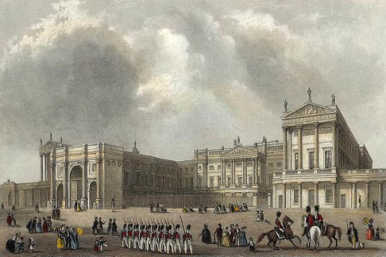
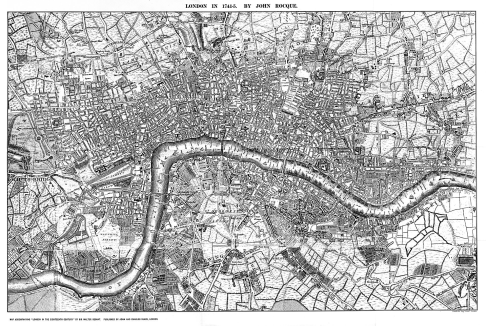
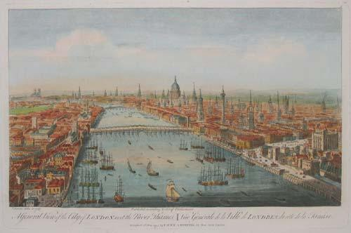
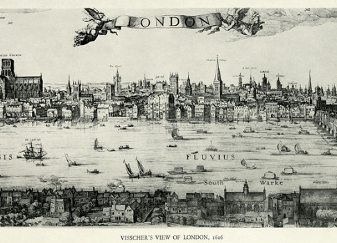

Information
Things to see
History
City of dreams and opportunities
London
Explore this beautiful with us
London was the capital of the
British Empire and so for almost three centuries the centre of power
for large parts of the world. The city has about 9.1 million
inhabitants (2018).

London is the largest urban area
and capital city of the United Kingdom. It is located in the southeast
of Great Britain.

London's diverse cultures
encompass over 300 languages. The mid-2018 population of Greater
London of about 9 million made it Europe's third-most populous city,
accounting for 13.4% of the population of the United Kingdom.
When was London founded? London's founding can be traced to 43 CE, when
the Roman armies began their occupation of Britain under Emperor
Claudius. At a point just north of the marshy valley of the River
Thames, where two low hills were sited, they established a settlement
they called Londinium.
 
Big Ben is arguably London’s most famous landmark. Surprisingly, it is
actually meant to go by the name ‘The Clock Tower’, while ‘Big Ben’ is
the name of the bell. Feel free to bore your friends and family with
that fact if you ever do a tour of London.
One of Christopher Wren’s original ideas for St Paul’s Cathedral
proposed a 60 foot stone Pineapple in place of the now iconic dome. It’s
a shame it didn’t happen, London’s skyline could have done with a
tropical feel.
 
The Great Fire in 1666 devastated London. While the fire reduced large
parts of the city to ruins, the verified death toll was only six people.
However, the real number is unknown, as many more died from indirect
causes. Monument, the 203ft stone obelisk located 203 ft away from where
the fire broke out, commemorates those who died.